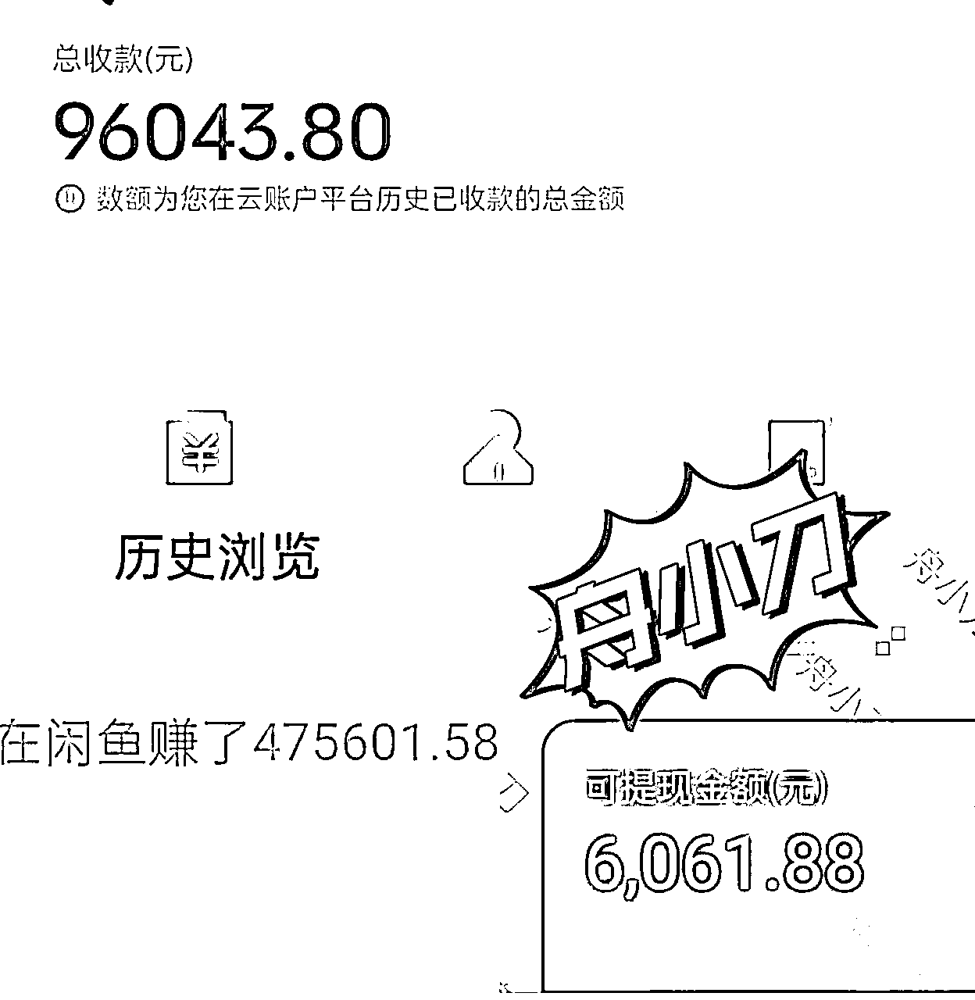
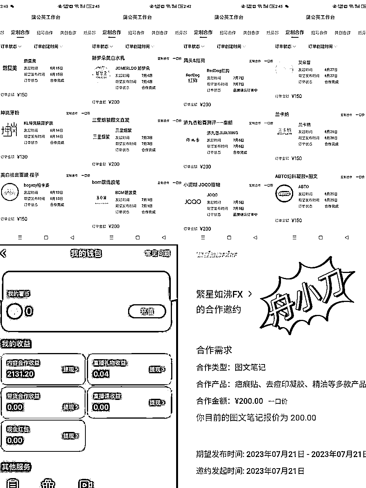
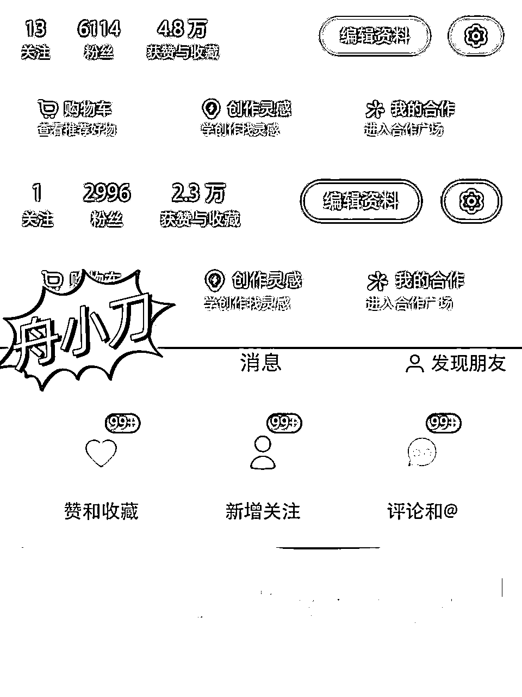
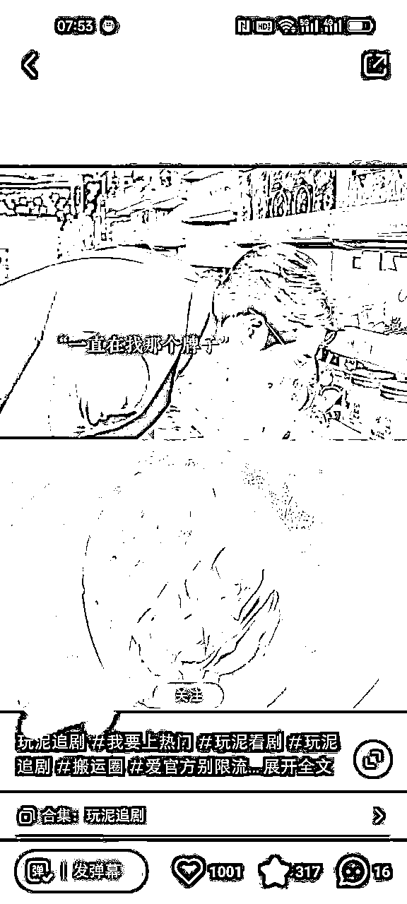
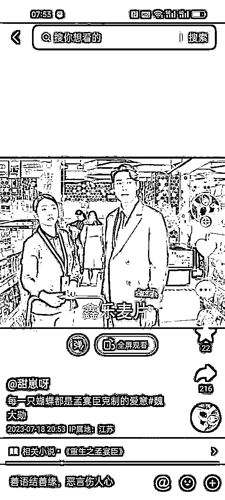
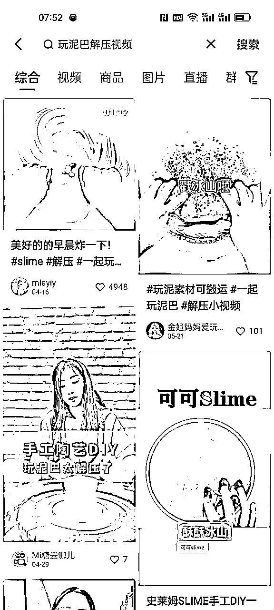
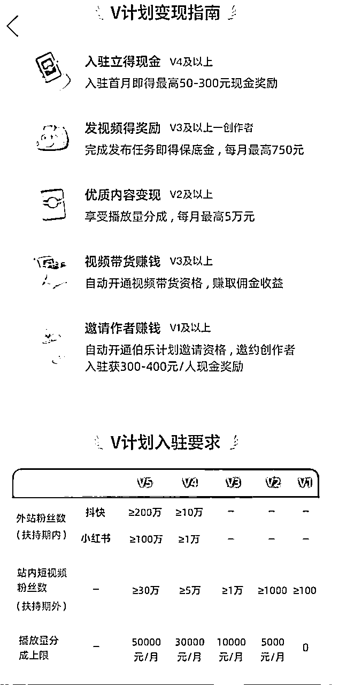
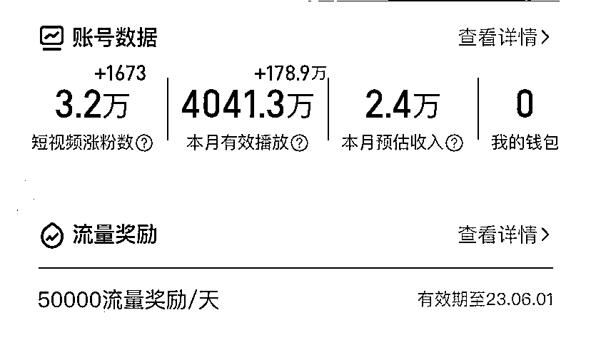

来源：https://kghub8c63q.feishu.cn/docx/TMmodkbnAo43jGxLAThcyBndnO5
群友们好，我是舟小刀，90后龙凤胎宝妈，前两年在老家带娃的时候，开始接触闲鱼带货，一年单个账号最高流水40w+，成功转型自由职业。也曾通过小红书引流私域带货收益10w+，今年年初做了短剧推广，刚做5天就赚了6000+。先晒个部分收益截图，有图有真相。

总结这两年能通过自由职业赚到钱，主要的原因还是因为信息差。在大多数人还没有发现这个赛道的时候，就开始行动起来。而且每次出结果都很快，正反馈来了干劲也足，更容易坚持。
最近又在做一个新项目，非常适合小白上手。只需要小红书达到千粉就可以开始接广告，只要根据正确的方法进行操作，每天都有广告收益。另外，万粉后还可以衔接多多视频，通过类似中视频的方式获得额外的收益。
众所周知，作为一个种草平台，小红书的用户付费意识很强。品牌方也舍得在小红书砸钱做推广。以前可能更注重与跟中部和头部的博主合作，现在则宁愿把预算给到普通人。小红书要入驻蒲公英才能在平台接广告，去年是5000粉，现在只需要满1000粉就可以接广告了，这对于咱们普通人来说，就是入场的最佳时机。小红书达到千粉后，每篇广告费可以达到150~500元不等。而且所有的广告都是图文形式，品牌方把图片文字发给你，你直接复制粘贴保存发布即可，非常简单。

小红书也是有查重机制的，如果你是随便去搬别人的作品，很有可能对方已经把作品已经分发到小红书上了，直接搬运账号会违规。所以需要找在小红书没发过作品的博主，搬运对方在抖音快手的作品到小红书平台，通过剪映做简单的去重就可以发布了。这样可以避免判违规，小红书的机制是只要相似度在60%以下就不会判。
这是我做测试的两个账号，发笔记两三天就破千粉，其中一个账号7天就六千粉了，破万粉指日可待。

怎么判断对方的作品是否被分发过？
最简单的方式就是在小红书上搜你想搬运的的账号名，看看有没有这个名字，头像和作品是不是一样的。还可以通过搜对方作品的标题，在小红书上搜索关键词，查看是否搬运过。建议不要搬运100万粉丝以上的博主的视频，容易被举报。目前做这个项目的人还比较少，还有很多小众领域还没被挖掘。
搬运的视频是不限任何领域的，你可以从你自己感兴趣的赛道开始做，比如你喜欢打游戏，可以搬运游戏视频，喜欢动漫，可以搬运别人的动漫视频，综艺八卦这种也可以，重点是做女性受众为主的视频。但是注意刚开始做账号一定要垂直。你要做哪个类型的视频就刷那领域的作品，模拟正常用户每天刷一个小时，点赞收藏转发。养号三天后，账号显示至少是奶瓶薯，基本是上就是养号成功，可以发作品了。
比如这个账号，做的是玩泥巴影视解压视频，播放量很高，涨粉也很快。

这个影视搬运的素材连水印都没去掉，可以在抖音上搜到原创博主，建议是找没水印的或者去除水印的视频，以免被举报。

一般是从抖音搬运影视剧，快手找泥巴解压的素材，搜索史莱姆玩泥巴、玩泥巴解压等关键词都可以找到。最后用剪映进行拼接就可以了。

最近魏大勋很火，抖音有很多爆款影视和综艺素材，可以自己去搜。即使是小白，一个视频5分钟左右就可以搞定，一天一个小时，可以做两三个账号，注意需要一机一卡一号，不要双开。手机搬运视频可以用去水印小程序，电脑就用批量搬运视频软件，建议用电脑操作，更方便快捷。
千粉后，需要实名认证，申请开通蒲公英平台，就可以接广告了。数据好会有品牌方邀约，可以自己接广，广告比较少，而且违规风险比较高。也可以选择绑定MCN机构，我这边是绑定了机构。靠谱的机构广告资源会多很多，现在每天都在接广，毕竟是给平台交过保护费的，相对不容易违规。机构有专门的老师教，玩法也会随着市场的情况改变。毕竟如果只搬运一个类型的视频，搬运的人多了，被判违规非原创的概率会大大增加，需要更新玩法。
小红书万粉以后账号权重高了，搬运也不容易违规。另外还可以申请参加多多V计划。也就是你不只是赚一份广告商单的钱，还可以搬运视频到多多视频，按播放量给钱，每万播6元，一举两得。这样，小红书万粉后就可以稳稳月入过万了。


小红书商单和多多V计划，玩的都是个信息差。发作品在抖音快手的博主不一定会分发到小红书和多多视频，他们不知道有这些活动，就给咱们做搬运的制造了搞钱机会。这年头赚钱，谁最先获得搞钱信息差，只要行动起来，想不赚钱都难。先定个小目标，从小红书千粉，接第一个广告开始吧。
以上就是舟小刀的小红书商单项目分享，小伙伴们如果觉得有帮助，就给我点个赞吧，感恩遇见。